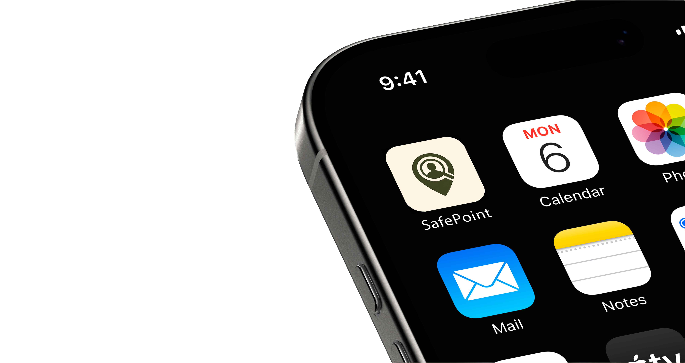
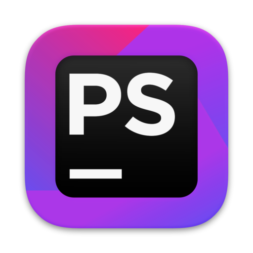

Figma prototype
Emergency support app
Core flows for reporting missing people, checking nearby resources and moving through safer routes.

Projects developed across different areas of design, from digital experiences and interactive interfaces to visual identity and communication. Each work represents an exploration between concept, aesthetics and experience.
a small dock with the tools I return to most.

I am a multidisciplinary designer with a special interest in UX/UI, interactive design and digital experiences.
I enjoy creating projects that bring together aesthetics and functionality, exploring typography, layout and interaction as ways to make communication clearer, more engaging and more intuitive.
Throughout my path, I have worked across different formats, from editorial to digital, always with a practical, curious and experimental approach.
I am interested in understanding how people interact with what I design and in finding visual solutions that are useful, coherent and meaningful.